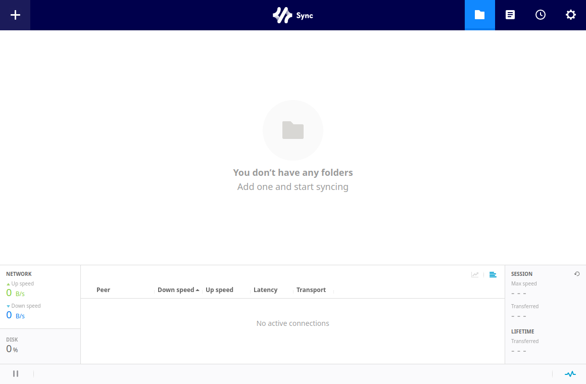

SyncPilot 把官方 Resilio Web UI装进原生桌面窗口，并在背后托管官方 rslsync 守护进程。每一屏都是官方界面——无需重新学习。

文件夹、伙伴、传输、偏好设置、激活——全部是官方 Resilio 界面，版本与你的 rslsync 构建一致。SyncPilot 补齐了官方在 Linux 上缺失的一切。
窗口内嵌的就是官方 Resilio Web UI——与 Windows、macOS 客户端相同的界面与工作流，没有任何会落后的二次实现。
一键启停，可接管已在运行的守护进程；崩溃看门狗按指数退避自动重启。还可选在应用退出后继续保活。
机器上还没有 rslsync？一键从官方 CDN 下载，经 sha256 校验装入 ~/.local/bin。数据路径跨版本不变，解压新版即可继续同步。
XDG autostart 开机自启、单实例窗口唤起，还有独立的原生设置窗口管理守护进程、端口与凭据。
每天后台检查一次 Ed25519 签名的 manifest，下载前必先询问、验签通过才落盘；rslsync 数据绝不触碰。
Web UI 仅留在 127.0.0.1，经注入认证的环回代理访问——不弹登录框，守护进程绝不响应未认证请求。
与在其他平台安装官方客户端的体验一致。
从 release 页获取 deb、rpm、AppImage 或 tar.gz，安装即用——GTK 4 与 WebKitGTK 在 Ubuntu 24.04+ 上系统自带。
SyncPilot 启动官方守护进程，并把窗口交给官方界面。还没有 rslsync？一键获取。
通过官方向导完成激活并添加文件夹——与 Windows、macOS 上完全一致。
你的密钥与文件永不出机。SyncPilot 在本地生成守护进程凭据，官方 UI 经仅环回的代理提供服务，自身不带任何遥测。所有 P2P 流量均由官方二进制处理。
安装即用。之后 SyncPilot 会保持自我更新——每天按签名 manifest 检查一次，下载前必先询问。缺失官方 rslsync 二进制时，会在首次启动时自动获取。